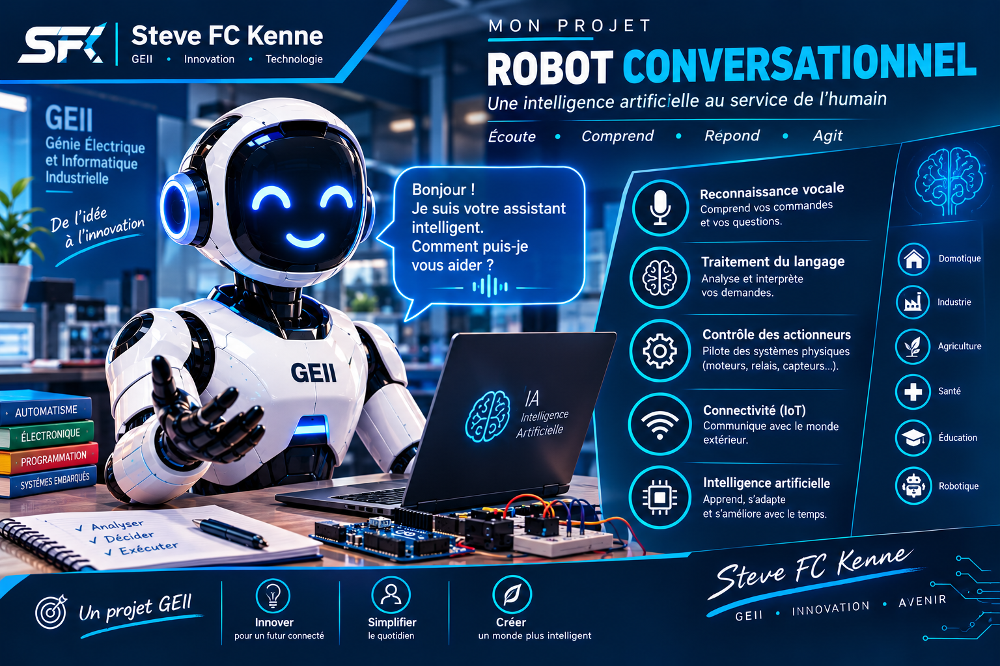

PROJET 01 · ROBOTIQUE & IA
Robot conversationnel intelligent
Un système robotique capable d'interagir avec son utilisateur, de comprendre des commandes et d'effectuer différentes actions.

Présentation du projet
Ce projet consiste à concevoir un robot conversationnel combinant informatique, électronique, communication sans fil et intelligence artificielle.
Le système doit pouvoir recevoir des informations provenant de l'utilisateur, les traiter et produire une réponse ou déclencher une action sur ses sorties.
Technologies
- Micro-ordinateur embarqué
- Microcontrôleur
- Communication Wi-Fi
- Capteurs
- Actionneurs
- Intelligence artificielle
Objectif
Développer une plateforme robotique capable d'interagir avec son environnement et son utilisateur tout en exécutant des actions commandées.